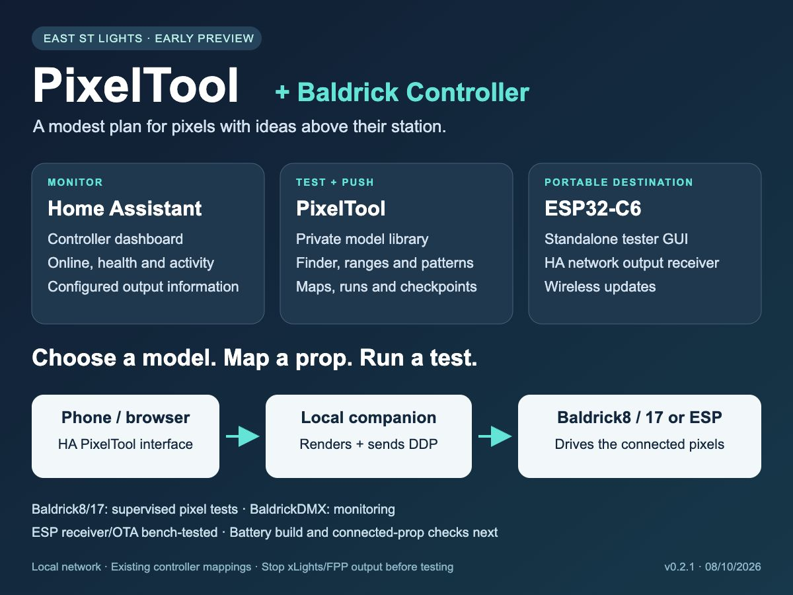

East St Lights · public community beta 0.2.1
Pixels organised. Tea optional.
Home Assistant monitoring, model-guided prop testing and a portable ESP destination. A modest plan for pixels with ideas above their station.
Baldrick Controller + HA PixelTool
Install the custom integration through HACS. Run the local Docker companion for model storage, rendering and DDP output. HACS does not install that companion or ESP firmware.
Open repository in HACS Set up integrationInstallation guide · First prop test · Beta release downloads
Portable PixelTool ESP
The standalone GUI also works independently of HA. The public installer uses original synthetic demo models; your HA model library is rendered by the companion and is not copied into the ESP.
Open demo ESP installerVerified board profile: Waveshare ESP32-C6-LCD-1.47-M, 8 MiB flash. Read the hardware and fresh-install erase instructions before flashing. Other boards/flash capacities are not qualified.
Beta scope
Baldrick8/17 output and BaldrickDMX monitoring have been exercised on the owner's display. The ESP receiver/OTA path passed USB-only bench tests; connected-pixel and final display checks remain. Stop xLights/FPP before testing. Ownership does not provide a network-wide DDP lock.
Uploaded models and credentials stay on your own local installation. No private/vendor models, device inventory or personal ESP repository history are published here.
Independent community project, not an I Light That, Baldrick, xLights, Waveshare, ESPHome or Home Assistant product.
